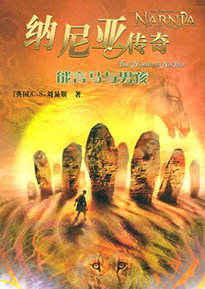
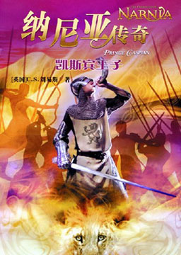
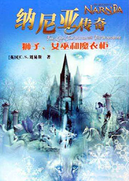
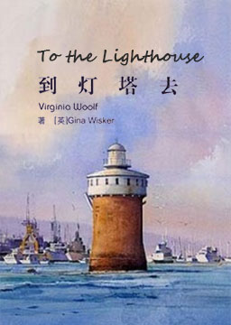

双语小说
收录中英文双语小说300多部，包括世界经典名著、社会小说、悬疑小说等短篇和长篇小说，可按照初中难度、高中难度和大学难度分类阅读，每部小说都有分段中英文对照，点击单词可查看中文翻译。

纳尼亚传奇5: 能言马与男孩 (The Horse And His Boy)
作者：克莱夫·斯特普尔斯·刘易斯 (Clive Staples Lewis) [英国]
故事发生在彼得、苏珊、爱德蒙和露茜统治纳尼亚的时期。一天，少年沙斯塔发现自己将被他的养父卖给一个凶恶的卡乐门贵族为奴。夜里，他和贵族的战马布里一起逃跑。布里原是纳尼亚会说话的马。沙斯塔和它一起逃往纳尼亚。途中，他们遇到了贵族少女阿拉维斯和她会说话的母马赫温。阿拉维斯是因为不满包办婚姻而逃跑的。于是他们四个便结伴而行。途中，他们历尽艰险，还得知卡乐门王子拉巴达什在向苏珊女王求婚被拒之后，试图突袭阿钦兰的安瓦德城，然后再进攻纳尼亚。在狮王阿斯兰的帮助下，他们骑马飞奔报信，最后，沙斯塔拯救了纳尼亚和阿钦兰。胜利后，他发现自己是阿钦兰王子，原名科奥，自幼被居心不良的叛徒偷走，后被渔夫所抚养。他后来继承了阿钦兰王位，并与阿拉维斯结婚。
纳尼亚传奇4: 银椅 (The Silver Chair)
作者：克莱夫·斯特普尔斯·刘易斯 (Clive Staples Lewis) [英国]
尤斯塔斯和女生波尔被一群坏学生所追赶，逃进了一扇通往荒野的小门，意外地发现自己来到了阿斯兰的国土上。他俩接受阿斯兰交付的任务，寻找凯斯宾国王失踪的独子——瑞廉王子。原来王后被一条青绿色的毒蛇咬死，不久，王子也被一个绿衣美女诱走。其实，这绿衣美女是蛇精，它用魔法控制了瑞廉王子。瑞廉王子每天只有夜间一个小时是清醒的。但这时蛇精把他捆在银椅中，用魔法控制他。尤斯塔斯和吉尔和帮助他俩的沼泽怪一起踏上了艰险的寻找之路，但由于波尔忘了阿斯兰的指示，所以增加了很多危险。他们通过巨人盘踞的北方荒原，误入吃人的哈方宫，来到地下的幽深王国，最后在黑暗城堡中解救了瑞廉王子，劈毁银椅并抵御住蛇精的魔法，最后杀死蛇精，解放了众多的蛇精奴隶——地精，回到纳尼亚。而不幸的是，年老的凯斯宾国王见到王子后立即死去。后来，阿斯兰用自己的一滴鲜血使凯斯宾复活，并恢复了青春与活力。他从此在阿斯兰的王国生活，而尤斯塔斯和波尔则回到自己的学校。纳尼亚传奇3: 黎明踏浪号 (The Voyage of the Dawn Treader)
作者：克莱夫·斯特普尔斯·刘易斯 (Clive Staples Lewis) [英国]
暑假里，爱德蒙和露西住在哈罗德舅舅家，和表弟尤斯塔斯住在一起。尤斯塔斯是个令人讨厌的家伙。有一天，墙上的一幅画有帆船的油画忽然将他们拉进了画中，他们在船上遇到了凯斯宾国王，他正出航寻找被叔叔驱逐的骑士们。航行的另一个目的是希望找到雄狮阿斯兰的王国。一路上他们经过了各种神奇的岛屿，如孤独岛、声音岛、黑暗岛等等，历尽种种艰险。在这历险过程中，尤斯塔斯因为一次意外变成了龙，后来改过自新，从一个贪婪自私、惹人厌的坏孩子转变成一个诚实勇敢的孩子。他们最后航行到世界尽头的外边，找到阿斯兰的国土，但除了老鼠雷佩契普留在阿斯兰王国外，其他人都只能回到拉曼杜岛。他们解除了魔法，唤醒了三位沉睡着的爵爷，最后又都回到纳尼亚。爱德蒙、露西也回到剑桥舅妈家。
纳尼亚传奇2: 凯斯宾王子 (Prince Caspian)
作者：克莱夫·斯特普尔斯·刘易斯 (Clive Staples Lewis) [英国]
故事发生在彼得等四兄妹回到自己的世界一年后。他们四人在假期回校时坐在火车站的长椅上等车，忽然感到有股特殊的力量将他们拉进纳尼亚。他们得知，自从他们离开纳尼亚后已经过去了1300年。纳尼亚原国王的弟弟弥若兹篡夺了王位，杀害兄长。在他的残暴统治下，所有会说话的动物和精灵们都隐藏起来了。然而老国王的儿子凯斯宾王子渴望解放纳尼亚，他逃离王宫，在森林里找到了纳尼亚的老居民，并得到他们的支持。正邪双方展开激战。王子在寡不敌众的时候吹响了苏珊的魔法号角，将彼得四兄妹唤回这个世界帮助他们。他们领导纳尼亚的动物和精灵们战胜了邪恶的国王，凯斯宾王子继承了王位，纳尼亚又恢复了以往的生机勃勃。彼得四兄妹又重返自己的世界。
纳尼亚传奇1: 狮子、女巫与魔衣橱 (The Lion, the Witch and the Wardrobe)
作者：克莱夫·斯特普尔斯·刘易斯 (Clive Staples Lewis) [英国]
英国作家C·S·刘易斯创作的一套儿童游历冒险系列小说，作品于1950-1956年间出版。其最大的特点是将神话奇幻巧妙地融入其中；同时它还是一部将种种神话元素、基督教思想和现代精神融为一体的魔幻小说。赢得了英国儿童文学的最高荣誉“卡内基文学奖”。该系列作品自20世纪50年代问世以来，销售近一亿册，已成为现代文学的经典。内容简介：佩文西家四个兄弟姐妹彼得、苏珊、爱德蒙和露茜在一位老教授家做客，无意中发现衣橱后隐藏着一个神奇的魔法王国。这里的居民有羊怪、海狸、矮人、树精，但在阿斯兰离开纳尼亚期间，这个国家被一个邪恶的白女巫占领。她压迫纳尼亚的居民，将其置于永恒的冬季之中。羊怪曾冒着生命危险救过露茜，海狸一家也帮助他们兄妹逃脱白女巫的追杀。爱德蒙曾受白女巫土耳其软糖的诱惑，一度背叛过自己的兄妹。 后来，阿斯兰伴随着圣诞老人来到纳尼亚，带领大家战胜了女巫。四个孩子成为纳尼亚的国王与女王。多年后，他们在打猎时无意中穿过衣橱，重新以孩子的身份回到自己的世界。
到灯塔去 (To the Lighthouse)
作者：艾德琳·弗吉尼亚·伍尔芙 (Adeline Virginia Woolf) [英国]
英国女作家弗吉尼亚·伍尔芙于1927年创作的长篇小说，是倾注心血的准自传体意识流小说。内容简介：小说以到灯塔去为贯穿全书的中心线索，写了拉姆齐一家人和几位客人在第一次世界大战前后的片段生活经历。拉姆齐先生的幼子詹姆斯想去灯塔，但却由于天气不好而未能如愿。后大战爆发，拉姆齐一家历经沧桑。战后，拉姆齐先生携带一双儿女乘舟出海，终于到达灯塔。而坐在岸边画画的莉丽・布里斯科也正好在拉姆齐一家到达灯塔的时候，在瞬间的感悟中，向画幅中央落下一笔，终于画出了多年萦回心头的幻象，从而超越自己，成为一名真正的艺术家。
茶花女 (The Lady of the Camellias)
作者：亚历山大·小仲马 (Alexandre Dumas.fils) [法国]
法国作家亚历山大·小仲马创作的长篇小说，也是其代表作。故事讲述了一个青年人与巴黎上流社会一位交际花曲折凄婉的爱情故事。作品通过一个妓女的爱情悲剧，揭露了法国七月王朝上流社会的糜烂生活。对贵族资产阶级的虚伪道德提出了血泪控诉。在法国文学史上，这是第一次把妓女作为主角的作品。内容简介：马格利特是著名交际花，凭借自己的美貌出入上层社会的热闹场合，实际上是可怜的下层贫民，迫于生计出卖自己的尊严和肉体。阿尔芒遇见马格利特，真诚地爱上了她，在他的追求下，两人相爱。阿尔芒的父亲知道后要马格利特离开阿尔芒，于是马格利特忍痛离开阿尔芒。阿尔芒不理解马格利特的做法，在一次宴会之中羞辱马格利特，之后伤心地离开国家。后来阿尔芒知道实情，于是回来找昔日情人。但是这时马格利特已患病垂死。由于过度地纵欲，加上生活没有规律，马格利特患上了很严重的肺病。最后，马格利特留下了感人肺腑的话语，早早离开了人世。当时，她才23岁。故事悲剧收场。
老人与海 (The Old Man and the Sea)
作者：欧内斯特·米勒尔·海明威 (Ernest Miller Hemingway) [美国]
美国作家海明威于1951年在古巴写的一篇中篇小说，奠定了海明威在世界文学中的突出地位，这篇小说相继获得了1953年美国普利策奖和1954年诺贝尔文学奖。内容简介：老渔夫圣地亚哥在海上制服大马林鱼后，在返航途中又同鲨鱼进行惊险的搏斗。作品中的形象具有很强的象征意蕴，他用大马林鱼象征人生的理想和人类作为生命本身所不可避免的所具有的欲望，用鲨鱼象征无法摆脱的悲剧命运，用大海象征变化无常的人类社会，而狮子则是勇武健壮、仇视邪恶、能创造奇迹的象征，圣地亚哥则是人类中的勇士与强大势力搏斗的“硬汉子”代表，他那捕鱼的不幸遭遇象征人类总是与厄运不断抗争却无论如何都无法试图去改变命运。
儿子与情人 (Sons and Lovers)
作者：戴维·赫伯特·劳伦斯 (David Herbert Lawrence) [英国]
英国作家戴维·赫伯特·劳伦斯创作的一部长篇小说，是作者的半自传体作品。劳伦斯的成名作，是他早期创作中最成熟、最有影响力的作品。最初，该书因为被斥为“有伤风化”的色情文学而先后在英美等国被禁止发行。20世纪60年代，经过轰动性的法庭审判方才解禁。随着人们对其作品认识的深入，它已被誉为世界文学名著长廊中独具特色的佳作，1999年，小说被评为“20世纪英国百部最佳小说”。小说中，劳伦斯通过现实主义和心理分析的写作方法，描写了十九世纪末叶英国工业社会中下层人民的生活和特定环境下母子间和两性间的复杂、变态的心理。他强调人的原始本能，把理智作为压抑天性的因素加以摒弃，主张充分发挥人的本能。劳伦斯还对英国生活中工业化物质文明和商业精神进行了批判。没有人会否认母爱的伟大，但母爱是单方面的。如果母爱可以得到回报，那也只能是来自儿女的爱。但劳伦斯在“儿子与情人”中，对这一观念进行了强有力的挑战。没有人会否认劳伦斯是二十世纪最重要的文学家，也没有人会否认弗洛伊德是二十世纪最伟大的心理学家。但能够对这部作品所讲述的故事公开表示认同的，恐怕远远不如对这部作品进行研究的人多。
霍乱时期的爱情 (Love in the Time of Cholera)
作者：加夫列尔·加西亚·马尔克斯 (Gabriel García Márquez) [哥伦比亚]
小说讲述了一段跨越半个多世纪的爱情故事：男女主人公在二十岁的时候没能结婚，因为他们太年轻了；经过各种人生曲折之后，到了八十岁，他们还是没能结婚，因为他们太老了。在五十年的时间跨度中，作者展示了所有爱情的可能性，所有的爱情方式。该小说不仅表达了“经历爱情的折磨是一种尊严”，更重要的是展现了哥伦比亚的历史。战争和霍乱威胁着拉美人民的生命，而人为的破坏加剧了人与自然的对立，人的社会孤独感使人与人之间缺乏理解信任，心理距离加大。